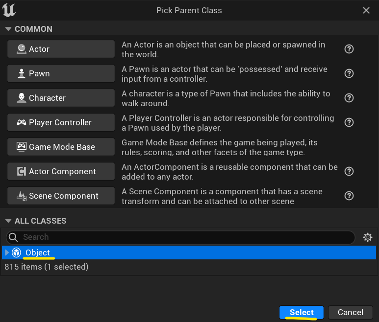
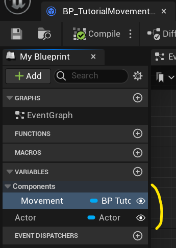
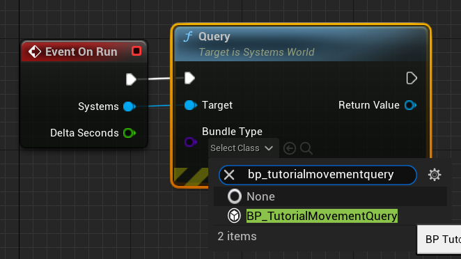

Setup system
C++
-
Tutorial/Systems/TutorialMovementSystem.h:#pragma once #include "CoreMinimal.h" class USystemsWorld; UFUNCTION() void TUTORIAL_API TutorialMovementSystem(USystemsWorld& Systems); -
Tutorial/Systems/TutorialMovementSystem.cpp:#include "Tutorial/Systems/Persistent/TutorialMovementSystem.h" #include "Systems/Public/SystemsWorld.h" #include "Tutorial/Components/TutorialMovementComponent.h" void TutorialMovementSystem(USystemsWorld& Systems) { const auto DeltaTime = Systems.GetWorld()->GetDeltaSeconds(); Systems.Query<UTutorialMovementComponent>().ForEach( [&](auto& QueryItem) { auto* Actor = QueryItem.Get<0>(); auto* Movement = QueryItem.Get<1>(); const auto Position = Actor->GetActorLocation(); const auto Velocity = FVector(Movement->Value, 0) * DeltaTime; Actor->SetActorLocation(Position + Velocity); Movement->Value = FVector2D(0); }); }
Since this is a lambda system, we need to register it to FSystemsReflection.
To do that you have to register it in your game module:
-
Tutorial/Tutorial.h:#pragma once #include "CoreMinimal.h" #include "Modules/ModuleManager.h" class FTutorialModule : public IModuleInterface { public: virtual void StartupModule() override; virtual void ShutdownModule() override; }; -
Tutorial/Tutorial.cpp:#include "Tutorial.h" #include "Systems/Public/SystemsReflection.h" #include "Tutorial/Systems/Persistent/TutorialMovementSystem.h" #define LOCTEXT_NAMESPACE "FTutorialModule" #define SYSTEMS_NAMESPACE "Tutorial" void FTutorialModule::StartupModule() { REGISTER_SYSTEM_FUNCTION(TutorialMovementSystem); } void FTutorialModule::ShutdownModule() { UNREGISTER_SYSTEM_FUNCTION(TutorialMovementSystem); } #undef LOCTEXT_NAMESPACE #undef SYSTEMS_NAMESPACE IMPLEMENT_GAME_MODULE(FTutorialModule, Tutorial);
Blueprint
-
Create new game object that inherits from
Object:
And name it
BP_TutorialMovementQuery. -
Add
BP_TutorialMovementcomponent and actor proeprties to tell over what systems world elements this query wants to iterate over.
Here Actor is
ActorandMovementisBP_TutorialMovementcomponent. -
Create new game object that inherits from
UScriptableSystem:
And name it
BP_TutorialMovementSystem. -
Override
OnRunevent:
-
Create
Querynode and assignBP_TutorialMovementQueryclass to it:
-
Create
Lazy Iteratenode:
-
Perform update on yielded object:

Documentation built with Unreal-Doc v1.0.5 tool by PsichiX